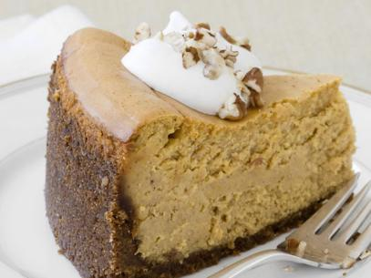

Pumpkin Cheesecake

Description: It's a cheesecake, with pumpkin! Need I say more?
Ingredients
- 12 tablespoons unsalted butter, melted
- 2 1/2 cups graham cracker crumbs
- 2 3/4 cups sugar
- Salt
- 2 pounds cream cheese, at room temperature
- 1/4 cup sour cream
- 1 15-ounce can pure pumpkin
- 6 large eggs, at room temperature, lightly beaten
- 1 tablespoon vanilla extract
- 2 1/2 teaspoons ground cinnamon
- 1 teaspoon ground ginger
- 1/4 teaspoon ground cloves
- 2 cups sweetened whipped cream
- 1/3 cup toasted pecans, roughly chopped
Directions:
- Position a rack in the center of the oven and preheat to 325 degrees F.
- Brush a 10-inch springform pan with some of the butter. Stir the remaining butter with the crumbs, 1/4 cup of the sugar and a pinch of salt in a bowl. Press the crumb mixture into the bottom and up the sides of the pan, packing it tightly and evenly. Bake until golden brown, 15 to 20 minutes. Cool on a rack, then wrap the outside of the springform pan with foil and place in a roasting pan.
- Bring a medium pot of water to a boil. Meanwhile, beat the cream cheese with a mixer until smooth. Add the remaining 2 1/2 cups sugar and beat until just light, scraping down the sides of the bowl and beaters as needed. Beat in the sour cream, then add the pumpkin, eggs, vanilla, 1 teaspoon salt and the spices and beat until just combined. Pour into the cooled crust.
- Gently place the roasting pan in the oven (don't pull the rack out) and pour the boiling water into the roasting pan until it comes about halfway up the side of the springform pan. Bake until the outside of the cheesecake sets but the center is still loose, about 1 hour 45 minutes. Turn off the oven and open the door briefly to let out some heat. Leave the cheesecake in the oven for 1 more hour, then carefully remove from the roasting pan and cool on a rack. Run a knife around the edges, cover and refrigerate at least 8 hours or overnight.
- Bring the cheesecake to room temperature 30 minutes before serving. Unlock and remove the springform ring. To finish, place a dollop of the whipped cream on each slice and sprinkle with the toasted pecans.